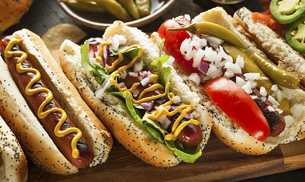

Detroit-Style Hotdog

Where I come from no Tigers game is complete without a Detroit Coney.
It's a grilled, natural-casing hot dog, loaded with chili sauce, mustard,
and onions. Yummy...Detroit-style yummy!
Ingredients
- 4 hot dogs with natural casings
- 1 hot dog rolls, sliced
- 1 small onion, diced
- 1 (10 ouce) can chile sauce without beans
- 4 tablespoons prepared yellow mustard, or to taste
Preparation
-
Preheat an outdoor grill for medium-high heat.
- Place hot dogs on the grill; cook until browned, 5 to 8 minutes,
turning once, or until done to suit your taste, Lightly grill hot
dog rolls.
-
Meanwwhile, place the chile sauce in a small microwave-safe bowl;
cook 1 minute. Stir and cook 1 minute more.
-
Place hot dogs on buns. Top each with chile sauce, onion, and 1
tablespoon mustar, or to taste.